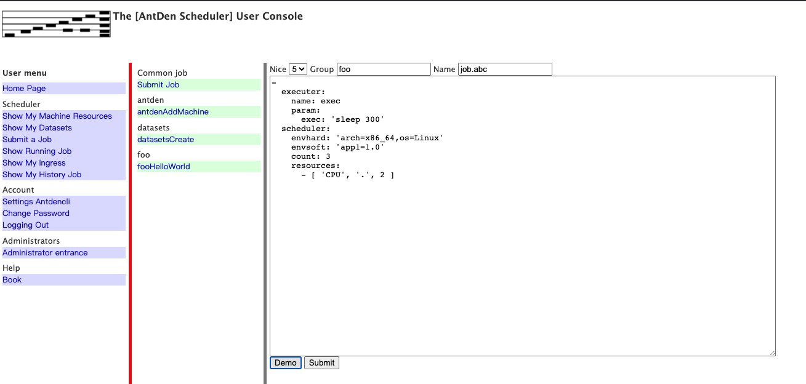

1. 执行器
1.1. 看例子

这个是dashboard上默认的提交任务的例子。下面看一下任务怎么和执行器相关联的。
可以看到，一个作业的提交包含5个信息
提交者： 在dashboard和antdencli中提交，系统会记录提交者的名称，默认情况下只有提交者可以看到自己提交的作业
- Nice, 优先级从0-9，默认是5，数字约低越先调度
- group 作业提交到的资源组
- Name 作业名，用于标记
- 作业的yaml文件
1.1.1. 作业的yaml文件
可以看到作业的yaml文件包含两个重要的字段， executer 和 scheduler. 其中scheduler 是提供给调取算法的配置，executer 是执行器的配置。 这个配置传入调取模块后，调度模块会把一个JOB生成一个或者多个的task。每一个task最终会找到 一个机器上的某个执行器去执行。配置会有响应的转换。
如上图的配置转换成执行器后变成如下
resources:
[ 'CPU', 0, 2 ]
param:
exec: sleep 300
taskid: T.20191120.191012.907980.111.001
原配置中的executer.param 会被原封不动的保留提供给执行器。 resources 为该任务可以使用到的资源。执行器应该按照这个资源表给任务分配资源。 taskid为此任务的编号。
1.1.2. 执行器的5个插件
执行器的插件位置存放在 /opt/AntDen/slave/code/executer 下，改目录下每一个执行器是一个目录， 可以看到里面有两个目录，exec和docker，下面看一下exec目录下的5个插件文件
checkparams （ 检查作业的yaml格式）
#!# perl: code/
use warnings;
use strict;
=head3 param
exec: sleep 100
=cut
return sub
{
my $param = shift @_;
die "exec undef" unless $param->{exec};
return;
};
这个插件是用来检查提交进来的作业的配置格式是否正确，配置中执行器的名称是必须指定的， 但是每个执行器需要什么其他的数据，执行器定义的时候自己进行格式检查
start （启动任务）
exec 的start执行器就是把exec的命令启动起来，同时返回改命令的进程ID
status （任务状态）
#!# perl: code/
use warnings;
use strict;
=head3 param
param:
executeid
=head3 return
return status, running or stoped
=cut
return sub
{
my $param = shift @_;
return kill( 0, $param->{executeid} ) ? 'running' : 'stoped';
};
在运行中的任务，机器上的slave程序会定时的检查每个task的状态。当状态是stoped时，进行日任务退出的后续操作
result (结果查看)
查看任务执行的最终结果， exec插件的result返回的是任务进程的返回码
sotp （停止任务）
停止任务的操作可能来之用户手动从dashboard或者antden处理触发，也可能来之与调度算法。 执行器需要完成stop的插件，把自己启动的任务给停止掉